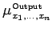
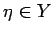
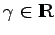
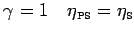
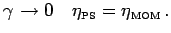
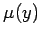

Defuzzifizierungsmethoden
Zur Berechnung einer scharfen Ausgangsgröße ist eine Defuzzifizierung der Fuzzy-Menge am Ausgang erforderlich. Man bedient sich verschiedener Methoden.
- 1. Maximum-Kriterium-Methode:
- Aus dem Bereich, innerhalb dessen die Fuzzy-Menge
 den maximalen Zugehörigkeitsgrad besitzt, wird ein beliebiger Wert  ausgewählt.
- 2. Mean-of-Maximum-Methode (MOM):
- Als Ausgabewert wird der Mittelwert über die maximalen Zugehörigkeitswerte genommen:
Wenn die Menge  , die ein Intervall darstellt, nicht leer ist, dann ergibt sich:
, die ein Intervall darstellt, nicht leer ist, dann ergibt sich:
- 3. Schwerpunktmethode (S):
- Bei der Schwerpunktmethode wird die Abszisse des Schwerpunktes einer Fläche mit gedachter homogener Dichtebelegung vom Werte 1 berechnet.
- 4. Parametrisierte Schwerpunktmethode (PS):
- Die parametrische Methode geht von  aus.
Aus dieser Formel folgt für  und für 
- 5. Verallgemeinerte Schwerpunktmethode (VS):
- Wird der Exponent
 bei der parametrischen Defuzzifizierungsmethode als Funktion von y angesehen, dann folgt daraus unmittelbar
bei der parametrischen Defuzzifizierungsmethode als Funktion von y angesehen, dann folgt daraus unmittelbar
Die VS-Methode ist eine Verallgemeinerung der PS-Methode. Sie ist von Interesse, wenn  selbst ein besonderes, von y abhängiges Gewicht erhalten soll.
- 6. Methode der Flächenhalbierung (FH):
- Die Position einer Geraden parallel zur Ordinate wird so berechnet, daß die linke und die rechte Seite der Fläche unter der Zugehörigkeitsfunktion gleich groß ist.
- 7. Methode der parametrisierten Flächenhalbierenden (PF):
-
- 8. Methode der größten Fläche (GF):
- Es wird die signifikante Teilmenge aus der Gesamtmenge ausgewählt, die dann mit bekannten Methoden, wie z.B. der Schwerpunktsmethode (S) oder der Bestimmung der Flächenhalbierenden (FH) ausgewertet wird.